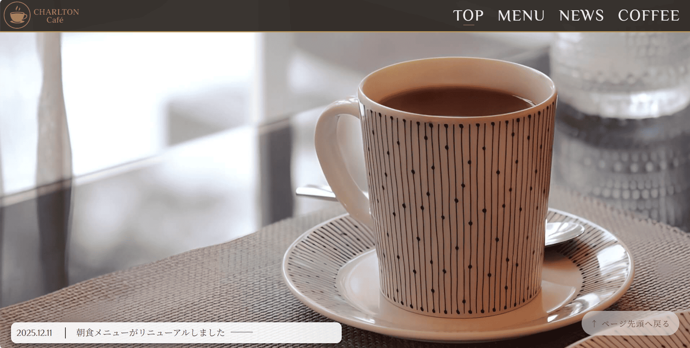
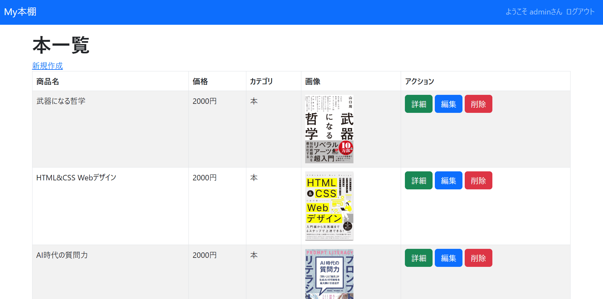
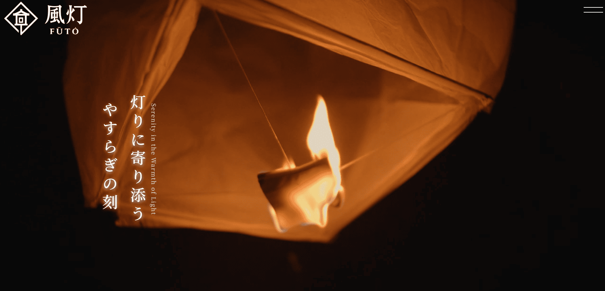

これまでに制作したWebサイトやアプリケーションの一覧です。
Cafe Site
架空のカフェを表現したサイトです

Overview
架空のカフェをテーマにした静的サイトです。 レイアウト、配色、タイポグラフィを意識し、 シンプルで読みやすい構成を目指して制作しました。
Tech Stack
- HTML / CSS
- JavaScript（軽微な動的処理）
- Photoshop（画像調整）
Key Points
- 写真とテキストのバランスを調整
- シンプルで視認性の高いUIを意識
- ※レスポンシブデザインは現在調整中
Link
[デモを見る] https://portfolio-cafe.pages.dev
[GitHub] https://github.com/taku26841397/portfolio_cafe
Django 本棚アプリ（CRUD）
Djangoの基本機能を使って構築した学習用アプリです

Overview
書籍の登録・編集・削除ができるCRUDアプリです。
DjangoのModel、View、Templateを用いて、
Webアプリケーションの基本的な構造を学ぶ目的で制作しました。
Tech Stack
- Python / Django
- SQLite（ローカル開発）
- Bootstrap（UI）
- Render（デプロイ）
Key Points
- CRUD機能の実装（Create / Read / Update / Delete）
- ModelとDBの連携を理解
- Bootstrapで簡易的なUIを構築
Link
[デモを見る] https://portfolio-crud-j2ow.onrender.com/
[GitHub] https://github.com/taku26841397/portfolio_crud
※Renderの無料プランのため、起動まで数分かかります。ご了承ください。
旅館 Site
架空の旅館を表現したサイトです。
一部画像に生成AIで出力したものを使用しています。

Overview
架空のカフェをテーマにした静的サイトです。 レイアウト、配色、タイポグラフィを意識し、 シンプルで読みやすい構成を目指して制作しました。
Tech Stack
- HTML / CSS
- JavaScript（動的処理）
- Photoshop（画像調整）
- 生成AI（画像の生成）
Key Points
- 写真とテキストのバランスを調整
- シンプルで視認性の高いUIを意識